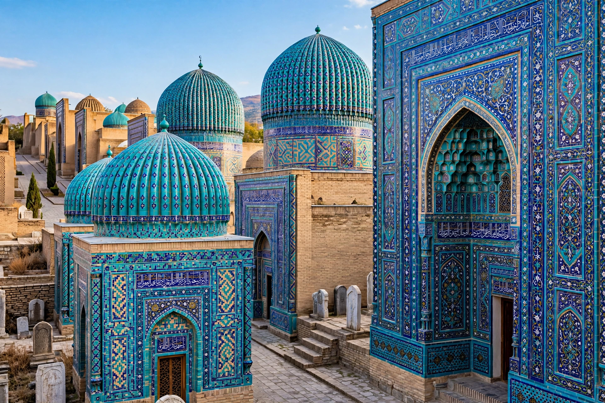

Timurid architecture is the distinctive style of building developed under the Timurid Empire (1370–1507), the empire founded by the Turco-Mongol conqueror Timur (Tamerlane) across Central Asia, Iran and beyond. Drawing on Persian, Seljuk and local Transoxianan traditions, it produced monuments of colossal scale and brilliant colour — soaring portals, ribbed turquoise domes and walls sheathed in glazed tile — and it profoundly influenced the later architecture of Safavid Iran, the Ottoman world and Mughal India, including the Taj Mahal.
| Timurid architecture | |
| Period | c. 1370 – 1507 |
|---|---|
| Region | Central Asia, Iran, Afghanistan |
| Centres | Samarkand, Bukhara, Herat |
| Features | Monumental pishtaq portals; double-shell ribbed domes; glazed tile and banna'i work; four-iwan plans |
| Key monuments | Shah-i-Zinda; Gur-e Amir; Bibi Khanum Mosque; Registan (later phases) |

The Shah-i-Zinda necropolis in Samarkand, a showcase of Timurid glazed tilework.
Timur made Samarkand his capital and lavished its plunder and its captive craftsmen — deported from conquered cities such as Damascus and Delhi — on building projects of deliberate, overwhelming grandeur. His successors, above all Shah Rukh in Herat and the astronomer-prince Ulugh Beg in Samarkand, continued the patronage, while in the later fifteenth century Sultan Husayn Bayqara's court at Herat, advised by the poet-statesman Mir Ali Shir Nava'i, sponsored a refined second flowering.
Timurid buildings emphasise gigantic scale and symmetrical axial planning. Characteristic elements include:
In Samarkand: the Shah-i-Zinda necropolis of royal mausolea, the vast congregational Bibi Khanum Mosque (1399–1404, among the largest mosques of its age), the Gur-e Amir (1404), where Timur is buried, and Ulugh Beg's observatory and madrasa on the Registan square. In Herat: the Goharshad Mosque and mausoleum complex and the Musalla complex, largely destroyed in the nineteenth century. Elsewhere: the shrine of Ahmad Yasavi at Turkestan, the Ak-Saray palace at Shakhrisabz, and the mausoleum of Khoja Ahmed Yasawi with its enormous dome.
Timurid forms travelled with the empire's successors. Babur, a Timurid prince, founded the Mughal Empire in India, where Timurid planning, domes and tile-and-stone inlay culminated in monuments such as Humayun's Tomb and the Taj Mahal. Safavid architects in Isfahan inherited Timurid tile mosaic and monumental scale, and the style's geometric and calligraphic revetments remain the visual signature of Central Asian Islamic architecture.